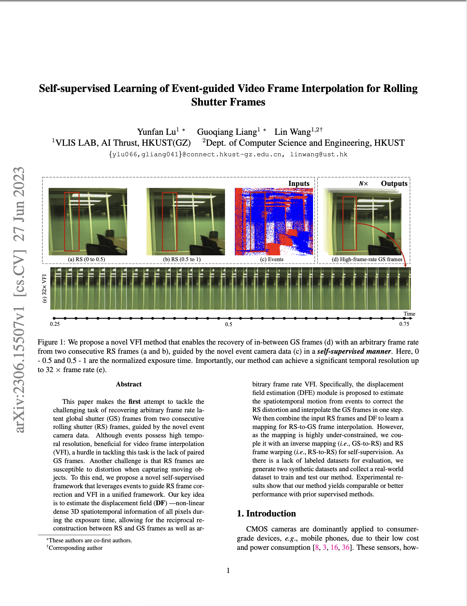

Self-supervised Learning of Event-guided Video Frame Interpolation for Rolling Shutter Frames
-

Yunfan Lu
AI Thrust, HKUST(GZ)
-

Guoqiang Liang
AI Thrust, HKUST(GZ)
-

Addison Lin Wang
AI Thrust, HKUST(GZ)
Dept. of CSE, HKUST
-

Paper
-

Video
-

Code
Abstract
This paper makes the first attempt to tackle the challenging task of recovering arbitrary frame rate latent global shutter (GS) frames from two consecutive rolling shutter (RS) frames, guided by the novel event camera data. Although events possess high temporal resolution, beneficial for video frame interpolation (VFI), a hurdle in tackling this task is the lack of paired GS frames. Another challenge is that RS frames are susceptible to distortion when capturing moving objects. To this end, we propose a novel self-supervised framework that leverages events to guide RS frame correction and VFI in a unified framework. Our key idea is to estimate the displacement field (DF) - non-linear dense 3D spatiotemporal information of all pixels during the exposure time, allowing for the reciprocal reconstruction between RS and GS frames as well as arbitrary frame rate VFI. Specifically, the displacement field estimation (DFE) module is proposed to estimate the spatiotemporal motion from events to correct the RS distortion and interpolate the GS frames in one step. We then combine the input RS frames and DF to learn a mapping for RS-to-GS frame interpolation. However, as the mapping is highly under-constrained, we couple it with an inverse mapping (i.e., GS-to-RS) and RS frame warping (i.e., RS-to-RS) for self-supervision. As there is a lack of labeled datasets for evaluation, we generate two synthetic datasets and collect a real-world dataset to train and test our method. Experimental results show that our method yields comparable or better performance with prior supervised methods.
Results
Results of rolling shutter correction and video frame interpolation
Video Results of rolling shutter correction and video frame interpolation
Approach
The overall framework of the proposed approach is depicted in the following figure, which can be divided into three parts: (I) Displacement Field Estimation, (II) Latent GS frames Generation, and (III) Reciprocal Reconstruction. As the oversimplified linear motion model fails in complex non-linear motions, we first introduce DF which contains non-linear motion during the exposure time and bridge the gap between RS frames and GS frames (Sec. 4.1), followed by describing how to generate latent GS frames by RS frames and DF (Sec. 4.2). Since the mapping from RS to GS is highly under-constrained, we couple it with the inverse mapping (GS-to-RS) and RS frame warping (RS-to-RS) for self-supervision (Sec. 4.3).